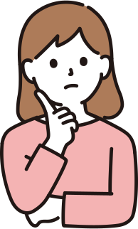

就労移行支援事業所ハートフルACE(エース)紹介
ハートフルACEってどんなとこ？

カリキュラムについて
- カリキュラム
- 月 ～ 金 11：00 ～ 11：50
| (月)メンタルヘルス |
|
|---|---|
| (火)ビジネスマナー |
|
| (水)就活について |
|
| (木)生活訓練 |
|
| (金)PC学習 |
|
| (土)運動 |
|
※ほかにもたくさんのカリキュラムをご用意しております。
ACE(エース)のスケジュール
利用者さんの声
- 20代男性Aさん
- ACE(エース)のおかげで就職できました。仕事の悩みも定期的に聞いてくれるのでこれからも安心して働けそうです。
- 10代女性Bさん
- 初めてスーツを買うときもいろいろサポートしてくれて嬉しかったです。
施設紹介

よくあるご質問
手続きについて
ACE(エース)の利用料は？
当事業所の利用をご希望される方の生活状況によって異なりますが基本的には無料でご利用いただけます。
役所への届け出・鉄好き関係は？
必要であればハートフルACE(エース)のスタッフも同行いたします。
通院なし・障がい者手帳なしでも利用できるの？
自治体の判断により利用可能な場合があります。
必要な方には病院を探すお手伝いや障がい者手帳の申請についての助言など幅広く対応しておりますので、お気軽にお問い合わせください。
通所について
朝から通わないといけないの？
午後からの利用や短時間の通所でも大丈夫！
まずはハートフルACE(エース)に慣れることから始めてみませんか？自分のペースでゆっくり通ってい行きましょう。
じたくからのカリキュラム参加はできるの？
オンライン対応もばっちり！
ビデオ通話アプリ(zoom)を利用することで、パソコンやスマホがあればご自宅からでも参加することができます。zoomの使い方も分かりやすくご案内いたします。
就職したいけど、自分に合った仕事がわかりません
お任せください！
ハートフルACE(エース)はそんな方にとっての福祉施設です。毎年多くの就職者を送り出している経験豊富なスタッフと一緒にあなたのご希望に沿うお仕事を探していきましょう！
見学＆体験受付中
TELの方
092-753-7245
「ACEのホームページをみて見学したい」とご連絡ください
当日は手ぶらでOK
※必要に応じてお飲み物をご持参ください。
体験スケジュール
- カリキュラム体験（11:00 ~ 11:50）※お気軽にご相談ください
- 個別面談（約30分）※ACEのご紹介・お悩み相談など
平日の午後や土曜日（午後のみ）もご相談可能です。ご希望の日時をお伝えください。
受付時間
月 ～ 金
10：00 ～ 18：00
土
12：00 ～ 18：00
日・祝
休み